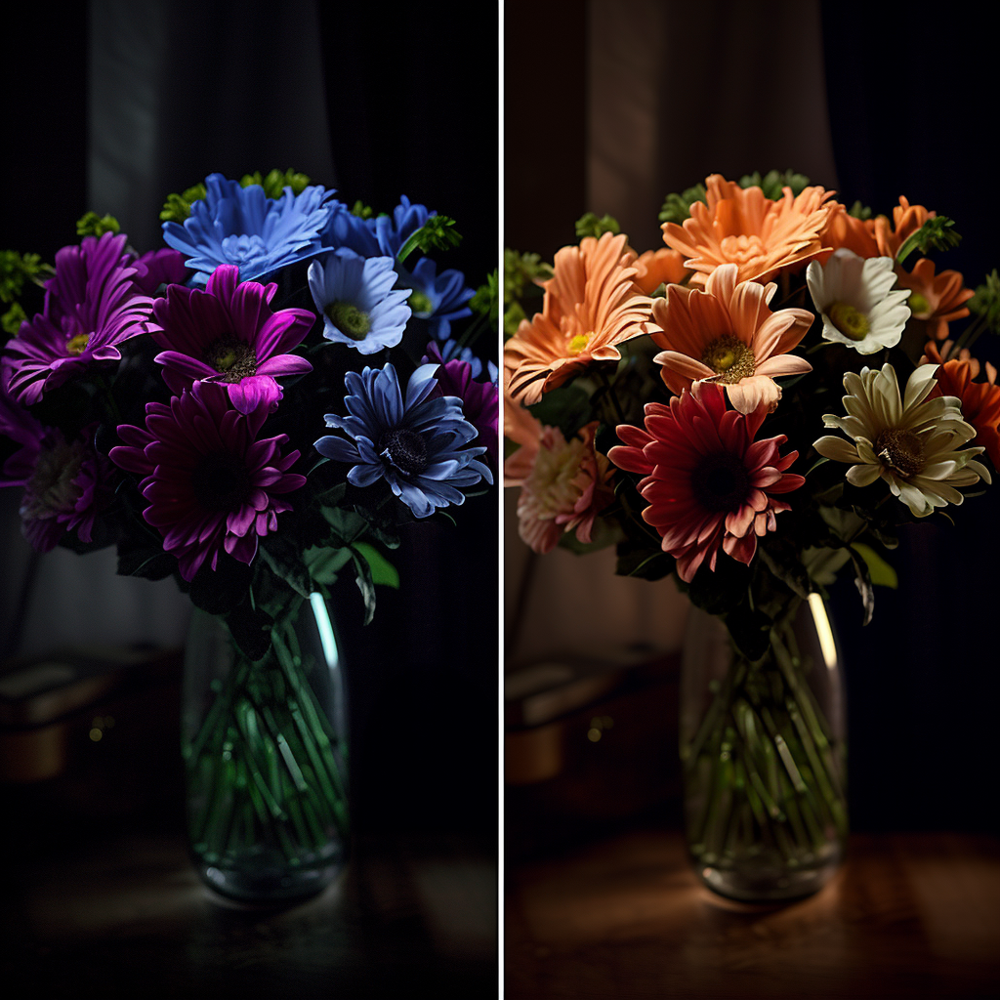
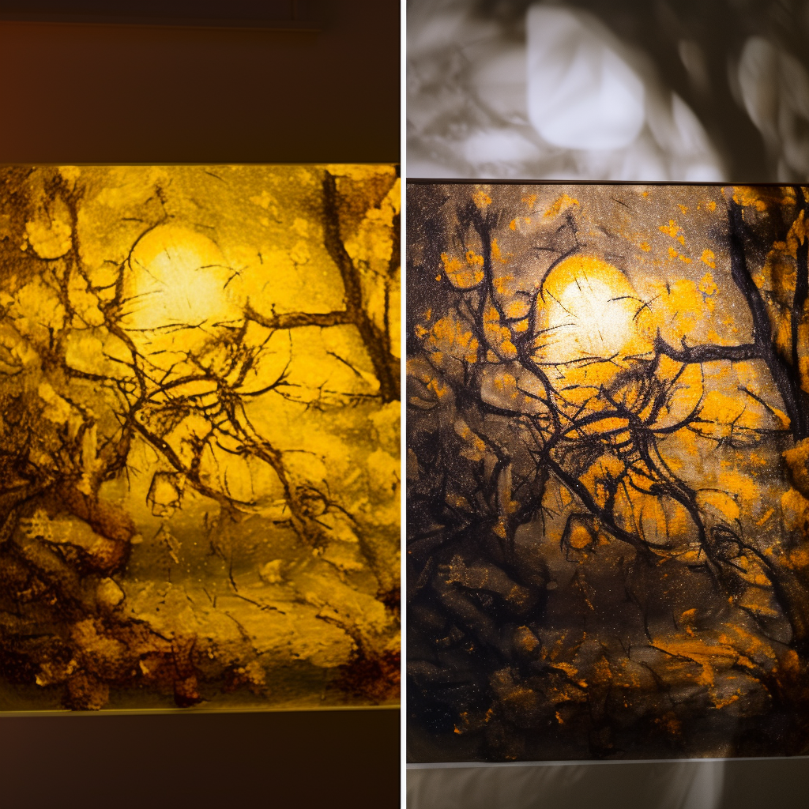
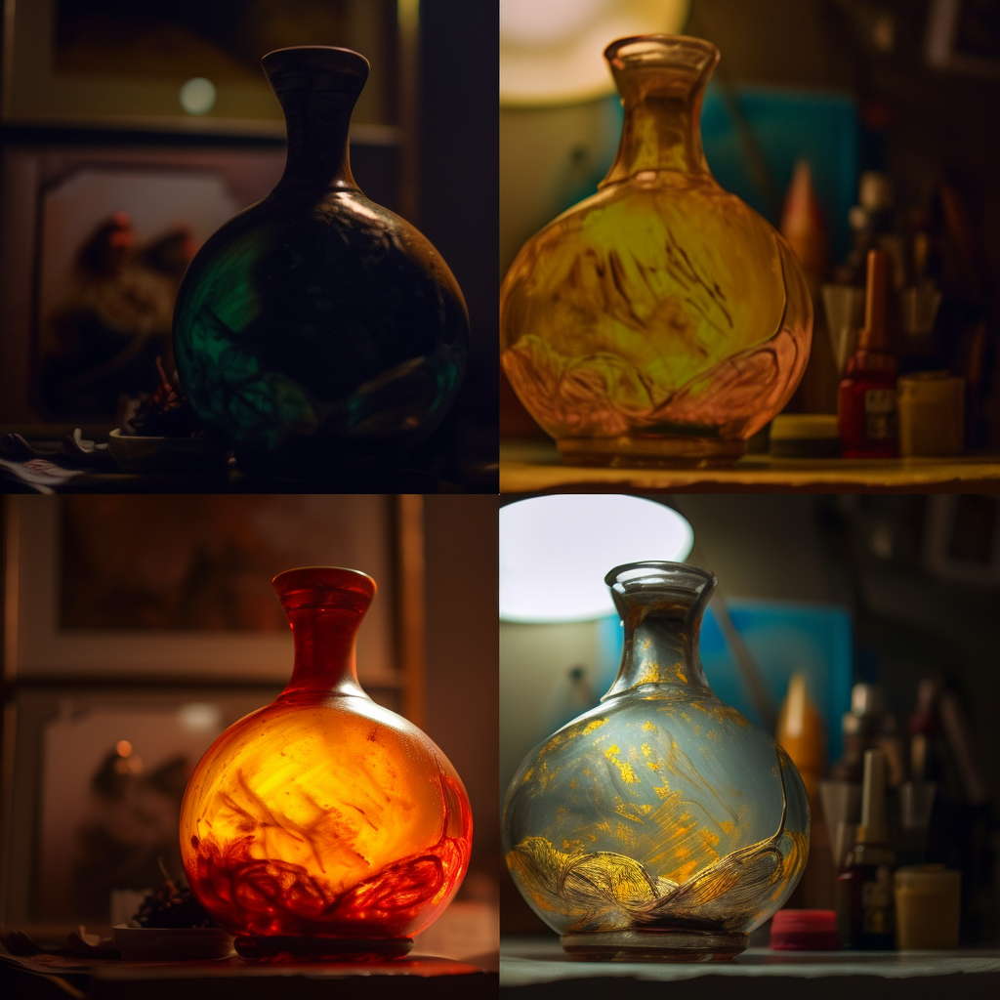
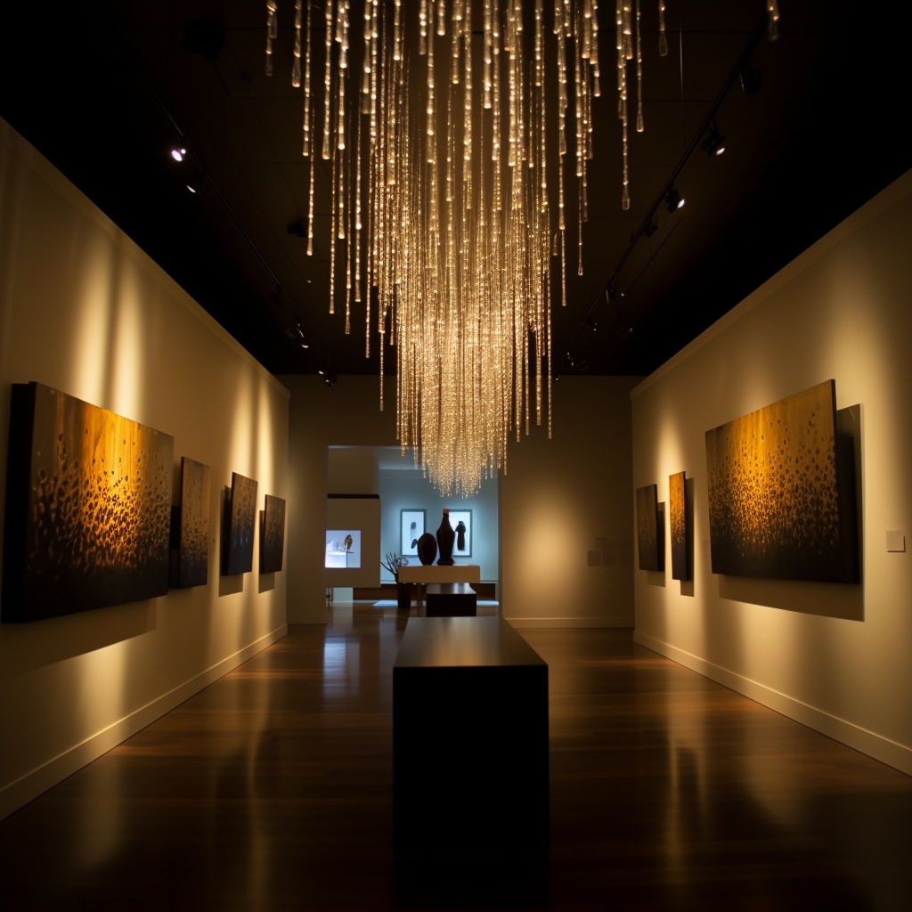

Color Rendering Index (CRI)
Color rendering index (CRI) is a measure of a light source's ability to accurately and faithfully display the colors of objects in comparison to a natural light source. This is an essential parameter for lighting design and it is used to evaluate the quality of lighting in different applications. In this article, we will discuss what CRI is, how it is measured, and its importance in lighting design.
What is CRI?
CRI is a measure of how well a light source renders color in comparison to a natural light source, such as daylight. It is calculated on a scale of 0 to 100, where 100 represents the most accurate color rendering. The value commonly referred to as "CRI" on widely available lighting products is actually the CIE Ra value, with "CRI" being a general term and CIE Ra being the international standard color rendering index. A higher CRI means that the colors of an object appear more natural and vibrant under that light source. CRI is particularly important for environments where color accuracy is crucial, such as art galleries, fashion stores, and hospitals.
How is CRI measured?
CRI is measured by comparing the color appearance of an object under the light source being tested to its appearance under a reference light source with a known spectral power distribution. The color difference is then quantified using a set of color samples and a color rendering index formula. The result is a single number that represents the light source's color rendering ability.
For sources with correlated color temperatures under 5000 K, the reference source is a black body radiator, while for other sources, such as D65, a phase of daylight is used. To ensure that like quantities are compared, chromatic adaptation is performed. The Test Method only requires colorimetric information, rather than spectrophotometric information.
To find the chromaticity coordinates of the test source in the CIE 1960 color space, the 2° standard observer is used. The correlated color temperature (CCT) of the test source is determined by finding the closest point to the Planckian locus on the (u, v) chromaticity diagram. If the CCT is less than 5000 K, a black body is used as the reference source, while CIE standard illuminant D is used for sources with CCTs greater than 5000 K. Both sources should have the same CCT. To ensure that the CRI is only defined for light sources that are approximately white, the chromaticity distance (DC) of the test source to the Planckian locus should be less than 5.4×10−3 in the CIE 1960 UCS.
The first eight standard samples, from the fifteen in total, should be illuminated alternately using both sources. The co-ordinates of the light reflected by each sample in the CIE 1964 color space should be found using the 2° standard observer. Each sample should then be chromatically adapted by a von Kries transform. The Euclidean distance ΔEi between the pair of co-ordinates should be calculated for each sample, and the special CRI calculated using the formula Rᵢ = 100-4.6ΔEᵢ. The general CRI (Ra) can be found by calculating the arithmetic mean of the special CRIs.
What is the difference between Color Fidelity and Color Gamut?
While Color Rendering Index (CRI) is a useful metric to measure the color fidelity of a light source, it doesn't provide information about the average change in colorfulness. Therefore, two light sources with identical CRI values may render colors differently in terms of saturation or colorfulness. This is where the concept of color gamut comes into play.
The color gamut is derived from the area formed by these eight test color samples (TCS) in color space. It is measured by the color gamut index, Ga, which indicates the average change in colorfulness for eight TCS between a light source and a reference illuminant. If the area for the test source is larger than for the reference illuminant, Ga will be >100, which means that colors will appear more colorful. On the other hand, if the area for the reference illuminant is larger, Ga will be <100, indicating that colors will appear less colorful.
Unlike CRI, color gamut provides information about the direction of color shifts, which is essential for accurate color rendering. The supplementary GLA tool includes chroma indices for all TCS, including C9, which represents the red chroma index. These indices indicate the direction of color shifts and help in achieving accurate color rendering.
In summary, while CRI measures color fidelity, color gamut provides information about the range of colors that a light source can produce and the direction of color shifts. Both metrics are essential for accurate color rendering, and they should be considered together when selecting a light source for a specific application.
What is the difference between TM30 Rf and CIE Ra?
The CIE Ra, has faced criticism for its limited ability to accurately predict color appearance in some specific cases. Instead, measures based on color appearance models such as CIECAM02 have been favored. Additionally, Ra is sometimes not considered reliable for visual assessment of light sources, particularly those below 5000 kelvin. To address these issues, new color rendering indices for color fidelity like the IES TM-30 Rf have emerged and are being adopted by some professional lighting designers. The TM-30 Rf uses the CIECAM02 color appearance model and is formed by the use of 99 samples.
The Rf seemingly is more scientifically accurate than the previous measure (CRI) because it takes into account some previously reported inaccuracies. Rf measures how closely the colors of a sample set are reproduced by a test light compared to those under a reference illuminant. However, Rf only considers one aspect of color quality and does not include perception-related color quality measures beyond fidelity. Therefore, Rf is not a replacement for the general color rendering index (Ra) which is used to rate and specify products. Future studies should develop a new set of color quality measures that include perception-related effects beyond fidelity.
The importance of CRI in lighting design
CRI is an essential parameter in lighting design because it has a significant impact on the perceived quality of light. A higher CRI means that the colors of an object appear more natural and vibrant, which can have a positive effect on people's mood, behavior, and productivity. In contrast, a low CRI can make colors appear dull and washed out, which can have a negative impact on people's perception of the environment.
CRI and energy efficiency
One of the challenges of lighting design is to balance color accuracy with energy efficiency. Light sources with a high CRI tend to be less energy efficient because they require more spectral components to accurately render colors. However, advances in LED technology have made it possible to achieve both high CRI and energy efficiency in the same light source.
CRI and color temperature
Color temperature is another important parameter in lighting design that is often confused with CRI. Color temperature refers to the perceived "warmth" or "coolness" of light (i.e., color of light emitted by an idealized opaque and non-reflective body), measured in degrees Kelvin (K). CRI and color temperature are independent parameters that can affect the perceived quality of light in different ways
A high CRI light source can enhance the perceived color temperature of an environment, making it appear more natural and comfortable. For example, a high CRI light source with a warm color temperature can make a living room feel cozy and inviting. In contrast, a low CRI light source with a cool color temperature can make the same room feel cold and uninviting.
CRI in different lighting applications
CRI is an important consideration in various lighting applications, including:
• Residential lighting: A high CRI light source can enhance the appearance of colors in a home environment, making it feel more comfortable and welcoming.
• Commercial lighting: In retail stores and restaurants, a high CRI light source can enhance the appearance of merchandise and food, making them look more appealing to customers.
• Healthcare lighting: In hospitals and clinics, a high CRI light source can improve the accuracy of medical procedures and enhance the comfort of patients and staff.
• Art and museum lighting: In art galleries and museums, a high CRI light source is essential to accurately render the colors of paintings, sculptures, and other exhibits.
The future of CRI
As LED technology continues to evolve, it is becoming easier and more cost-effective to achieve high CRI in LED lighting. This trend is likely to continue, as manufacturers strive to meet the increasing demand for high-quality, energy-efficient lighting. In addition, research into the effects of light on human health and wellbeing is shedding new light on the importance of CRI in different environments.
Conclusion
In conclusion, color rendering index (CRI) is a critical parameter in lighting design that measures a light source's ability to accurately render colors. A high CRI light source can enhance the perceived quality of light, making colors appear more natural and vibrant. CRI is an important consideration in various lighting applications, including residential, commercial, healthcare, and art and museum lighting. As LED technology continues to evolve, it is becoming easier and more cost-effective to achieve high CRI in LED lighting, which is likely to drive further demand for this parameter in the future.
FAQs
What is a good CRI for general lighting?
A CRI of 80 or higher is generally considered good for general lighting in residential and commercial applications.
Can LED lighting have a high CRI?
Yes, advances in LED technology have made it possible to achieve both high CRI and energy efficiency in the same light source.
Does CRI affect energy efficiency?
Yes, light sources with a high CRI tend to be less energy-efficient than those with a low CRI because they require more spectral components to accurately render colors.
Is CRI the same as color temperature?
No, CRI and color temperature are independent parameters that can affect the perceived quality of light in different ways.
Why is CRI important in healthcare lighting?
A high CRI light source can improve the accuracy of medical procedures and enhance the comfort of patients and staff in healthcare environments.
This text was written with help of ChatGPT and the figures were generated using Midjourney.
If you're interested in learning more about this research, feel free to reach out!
Rik Spieringhs